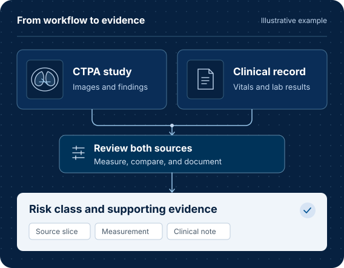

Combine imaging and clinical records
For pulmonary embolism risk stratification, review CTPA measurements alongside clinical findings and link the resulting risk class to its supporting evidence.
- CTPA
- Clinical records
- 3D Slicer
Computer-use agents in medicine
We study how agents can help with real clinical and research workflows using the software people already work with. The tasks clinicians and researchers share guide what we build and evaluate.

Why this matters
A workflow can require moving between software, inspecting intermediate results, and adapting to the case. We study where agents could reduce that manual work and how to verify the results.
Open problems and example workflows
For pulmonary embolism risk stratification, review CTPA measurements alongside clinical findings and link the resulting risk class to its supporting evidence.
Follow findings over time, compare measurements across studies, and record the source images and dates so another person can check the comparison.
A real problem gives us a concrete place to start. The evidence tells us what worked and where an agent still needs help.
Learn where clinicians and researchers spend time on manual work.
Specify the inputs, expected result, and evidence needed to check it.
Test agents on the task using the relevant tools and evidence.
Use failures to decide what to build and evaluate next.
Two projects explore how agents operate medical software and how we can evaluate their work.
Runtime
A runtime for agents to inspect complete medical imaging studies, operate imaging software, and capture evidence that can be reviewed.
Explore MedOpenClawBenchmark
A benchmark for medical imaging workflows that evaluates both the outcome and the evidence an agent uses to support it.
Explore MedFlowBenchTell us where the manual work is and how you check the result.